ガイド
タイトルへ兵
自軍は8種類・20人。討ち取った敵の兵も自軍になる。
図は自軍の兵から見た動き。上が敵陣。●が兵、○が行ける先、矢印は「その方向へ何マスでも（途中に兵がいれば手前で止まる）」。絵は対局画面と同じ見え方で、青が自軍。
| 兵 | 動き | |
|---|---|---|
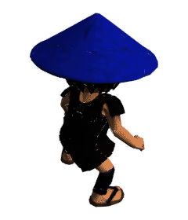 | 歩兵（歩） | ・○・・●・・・・ 前へ1マス |
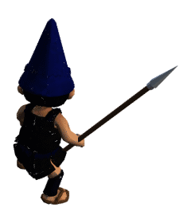 | 槍兵（槍） | ・↑・・●・・・・ 前へ何マスでも |
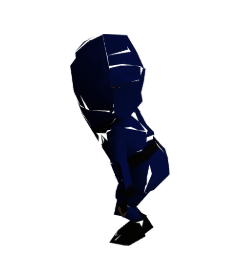 | 忍者（忍） | ○・○・・・・●・ 前へ2、左右へ1の先へ跳ぶ。間の兵を飛び越える |
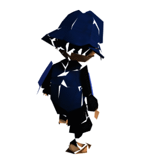 | 侍（侍） | ○○○・●・○・○ 前・斜め前・斜め後ろへ1マス |
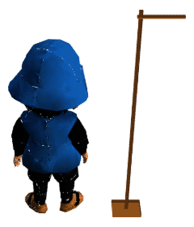 | 近衛兵（衛） | ○○○○●○・○・ 前・斜め前・横・後ろへ1マス |
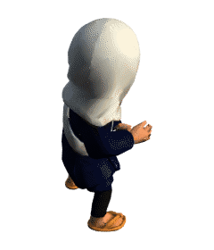 | 僧兵（僧） | ↖・↗・●・↙・↘ 斜めへ何マスでも |
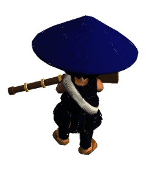 | 鉄砲兵（砲） | ・↑・←●→・↓・ 縦横へ何マスでも |
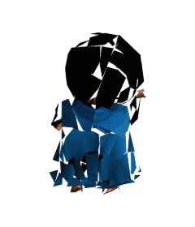 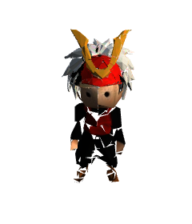 | 大将 | ○○○○●○○○○ どの方向へも1マス。追い詰められると負け |
括弧の一文字は控え欄（画面下）に出る印。大将は控えに入らない。
進化した兵
敵陣の奥3段で進化できる（条件はルールの進化へ）。近衛兵と同じ動きになった兵は、近衛兵と同じ幟を掲げる。
| 兵 | 進化後 | |
|---|---|---|
| 歩兵・槍兵 忍者・侍 | 近衛兵と同じ動きになる。姿はそのままで幟を掲げる（近衛兵は最初から幟を掲げている） | |
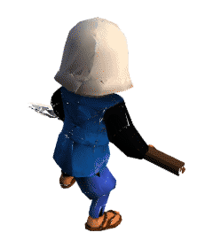 | 僧兵 | 斜めへ何マスでも ＋ 縦横へ1マス。姿が変わる |
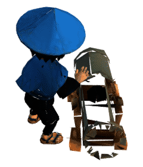 | 鉄砲兵 | 縦横へ何マスでも ＋ 斜めへ1マス。姿が変わり、そばに大砲が置かれる |
| 近衛兵・大将 | 進化しない |
ルール
勝ち負け
敵の大将を追い詰めたら勝ち。
- 追い詰める＝敵軍がどう動いても大将を守れない状態
- 敵軍に動ける兵がひとつもなくなったときも勝ち
- 自軍が同じ状態になれば負け。降参も負け
討った兵は控えに入る
敵の兵がいるマスへ動くと討ち取り、その兵は控え（画面下の控え欄）に入る。
- 自分の順番に、控えから空いているマスへ投入できる。投入は移動の代わりの1行動
- 投入した兵は進化する前の姿に戻る
- 置けない場所は光らない。主な制限：同じ縦の列に自軍の歩兵（進化前）がいるとき、そこへ歩兵は置けない。動けない場所（歩兵・槍兵の最奥、忍者の奥2段）にも置けない。歩兵の投入だけで大将を追い詰めて勝つことはできない
進化
敵陣の奥3段に入ると、兵が強くなる（動きは兵の「進化した兵」へ）。
- 領域に入る・領域の中で動く・領域から出る、どの行動でも進化できる
- 進化するかどうかは選べる。両方できるときは確認が出る
- そのまま進むと動けなくなる位置（歩兵・槍兵の最奥、忍者の奥2段）へは、確認なしで必ず進化する
- 討ち取られると進化は失われる
大将が危ない
敵が次の行動で大将を討てるとき、行動の表示に赤く「大将が危ない」と出る。
- このときは大将を守る行動しか選べない。逃がす、間に兵を置く、迫っている兵を討つ
- 自分から大将を危ない場所へ動かすこともできない
- 戦闘ログの「大将に迫る」は、相手の大将を危なくしたという意味
同じ配置のくり返し
同じ配置が4回くり返されると引き分け。
- 配置＝兵の位置・控え・どちらの順番か
- その間ずっと片方が大将に迫り続けていたら、迫り続けた側の負け
操作
兵を動かす
兵を押すと行ける先が光る。光ったマスを押すと動く。
- 別の場所を押すと選び直し
- 敵の兵がいる光ったマスを押すと討ち取る
控えから投入する
控え欄（画面下）の兵を押すと、置けるマスが光る。
拡大する
2本の指で広げると拡大する（最大3倍）。拡大して操作するのが普通の遊び方。
- 1本の指でなぞると見る場所が動く
- 「ズーム解除」で等倍に戻る（拡大中だけ出る）
進化の確認
「進化する」「進化しない」を押すと、それぞれの行ける先が戦場に出る。決めたら「この行動で進む」。
そのほか
- 戦闘ログを押すと全部の履歴が見られる
- 降参で対戦を終える。新しい対戦で最初から
- 後攻を選んでも自軍は手前。戦場のほうが向きを変える
困ったとき
押しても兵が選ばれない
拡大して、兵の足元を押す（操作の「拡大する」へ）。
「対戦相手の調子が悪いようです」と出た
敵軍の思考がうまく動いていない。「新しい対戦」でやり直す。
読み込みが長い
兵の3Dモデルを読み込んでいる。通信が遅いと10秒ほどかかる。
選びたい兵が選べない
「大将が危ない」のときは、大将を守れる兵しか選べない（ルールの「大将が危ない」へ）。